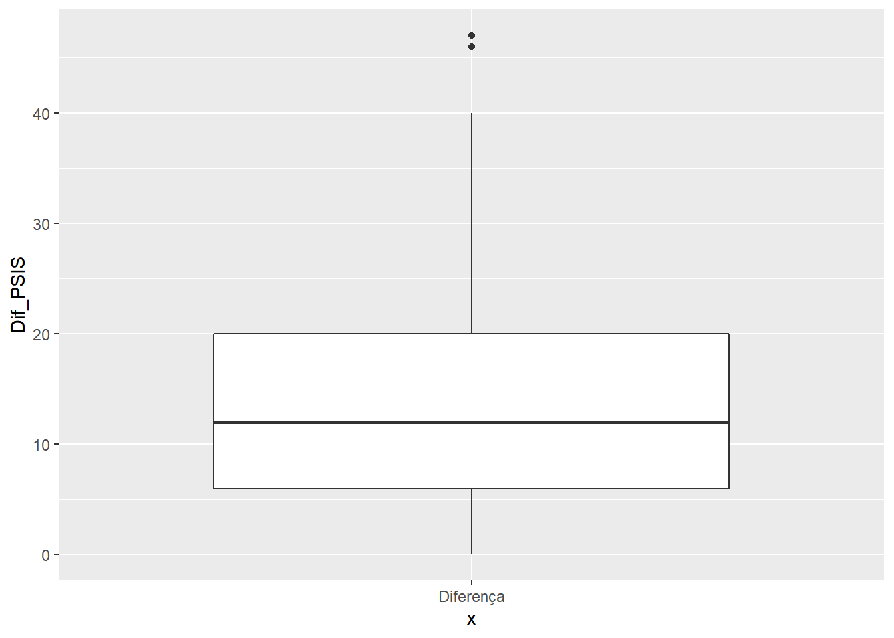

| Variável | N = 531 |
|---|---|
| Sexo | |
| Feminino | 36 (68%) |
| Masculino | 17 (32%) |
| 1 n (%) | |
P3_GabrielG_Leonardo
#Exercício 1
Construa tabelas unidimensionais completas de frequências absolutas (n) e relativas (%) dos indivíduos avaliados: a. por sexo b. por hipertensão c. prática de exercícios físicos
Descreva os resultados.
Por sexo:
Por hipertensão:
| Variável | N = 531 |
|---|---|
| Hipertensão | |
| Não | 36 (68%) |
| Sim | 17 (32%) |
| 1 n (%) | |
Por prática de exercícios físicos:
| Variável | N = 531 |
|---|---|
| Prática | |
| Não | 13 (25%) |
| Não Respondeu | 7 (13%) |
| Sim | 33 (62%) |
| 1 n (%) | |
library(ggplot2)
dados%>%
ggplot(aes(x = 'Diferença', y = Dif_PSIS))+
geom_boxplot()
Ex2
df1%>%
select(Sexo, Idade)%>%
gt| Sexo | Idade |
|---|---|
| Feminino | 39 |
| Feminino | 45 |
| Feminino | 60 |
| Feminino | 49 |
| Feminino | 63 |
| Feminino | 50 |
| Feminino | 66 |
| Feminino | 46 |
| Feminino | 62 |
| Feminino | 55 |
| Feminino | 59 |
| Feminino | 32 |
| Feminino | 42 |
| Feminino | 27 |
| Feminino | 68 |
| Feminino | 53 |
| Feminino | 80 |
| Feminino | 60 |
| Feminino | 72 |
| Feminino | 57 |
| Feminino | 63 |
| Feminino | 74 |
| Feminino | 49 |
| Feminino | 68 |
| Feminino | 35 |
| Feminino | 42 |
| Feminino | 61 |
| Feminino | 63 |
| Feminino | 68 |
| Feminino | 52 |
| Feminino | 62 |
| Feminino | 69 |
| Feminino | 63 |
| Feminino | 73 |
| Feminino | 55 |
| Feminino | 69 |
| Masculino | 47 |
| Masculino | 55 |
| Masculino | 68 |
| Masculino | 54 |
| Masculino | 57 |
| Masculino | 70 |
| Masculino | 43 |
| Masculino | 71 |
| Masculino | 52 |
| Masculino | 43 |
| Masculino | 48 |
| Masculino | 73 |
| Masculino | 66 |
| Masculino | 65 |
| Masculino | 44 |
| Masculino | 57 |
| Masculino | 55 |